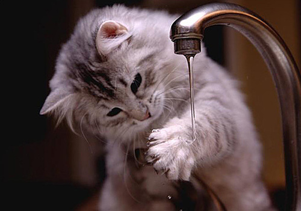

¿Los gatos se bañan?
Si y no, solo en ocasiones extraordinarias y no regularmente, por que pueden perder los aceites esenciales de su pelaje. La opinión veterinaria más aceptada dice que un gato sano y con buena apariencia no necesita baño.
Razones para bañar a tu gato:
- Si tu gato es de pelo semilargo o largo, podría necesitar un baño en el caso de que su piel se ponga demasiado grasa.
- Cuando el gato se ensucia con productos peligrosos
- Cuando su pelo este extemadamente sucio y/o enredado y sin manera de quitarle los nudos.
- Si tu gato tiene pulgas y/o garrapatas.
como acostrumbrar a un gato al baño
Primero que nada el gato se puede acostumbrar a diversas actividades, incluyendo el baño, y se recomienda hacerlo entre los 2 y 3 meses de edad, que es la etapa de socialización del cachorro. Y antes del baño preguntar a un veterinario si realmente es necesario dependiendo del aspecto de tu felino.
procedimiento del baño
- Antes de bañarlo cepilla su pelo para eliminar nudos y para darle un cariño al gato calmándolo. Es muy importante que tu estés tranquilo pues si ambos están nerviosos podría ocurrir un accidente.
- Ten a mano todo lo que necesitas, debes usar champú especial para gato (nunca uses productos para perros o humanos) y una esponja para frotarlo. Prepara el agua a una temperatura tibia que le resulte agradable al animal..
- Pon algodón dentro de sus orejas de este modo impedirás que el agua pase a sus oídos lo que podría causarle inflamaciones y complicaciones posteriores..
- Tómalo por la nuca con una mano y por su cuerpo con la otra e introdúcelo lentamente en el agua. Deja que el animal se vaya habituando y mantente firme no hay necesidad de ponerse nervioso..
- Moja al gato siempre comenzando por su cuerpo. La cabeza será lo último que deberás humedecer y lavar. Aplica el champú y frota suavemente, como masajeando pero de modo que permitas también que la suciedad salga de su pelo
- Moja al gato siempre comenzando por su cuerpo. La cabeza será lo último que deberás humedecer y lavar. Aplica el champú y frota suavemente, como masajeando pero de modo que permitas también que la suciedad salga de su pelo.
- A la hora de secar su pelo, hazlo con una toalla pero no la frotes sobre el pelo del animal este movimiento brusco lo alterará, más bien presiona siempre delicadamente, con suavidad.
NOTA:
Si tu gato es demasiado agresivo y no puede bañarlo acuda a su veterinario para encontrar uno solucion.
Regresar Inicio.
inicio de pagina